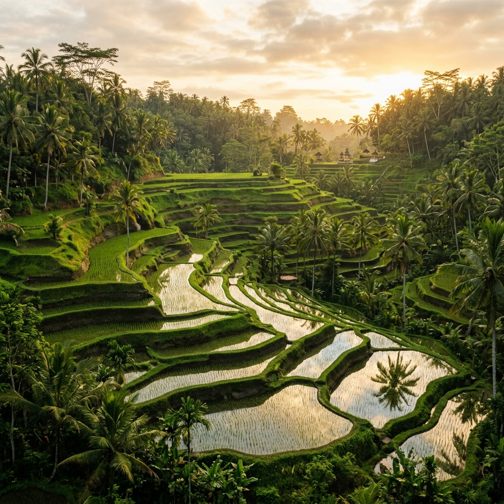

Pura Beji Meninting merupakan salah satu pura beji yang memiliki nilai sejarah, spiritual, dan budaya yang tinggi bagi masyarakat setempat

Pura Beji Meninting merupakan permata spiritual tersembunyi di Desa Perean yang memiliki nilai sejarah dan budaya yang tinggi. Keberadaannya tidak terlepas dari kisah perjalanan para dewa dalam menjaga keseimbangan alam dan menyembunyikan mata air suci (tirta) lestari di Pulau Bali sejak Tahun Saka 13 (91 Masehi).
Berabad-abad kemudian, Ida Pacung Sakti dari Puri Ageng Perean membangun tempat meditasi di sekitar mata air ini saat mengawasi pembuatan saluran air (empelan). Dari wahyu suci yang beliau terima, dibangunlah kompleks pelinggih yang kini menjadi hulu kehidupan bagi spiritualitas warga dan sistem pertanian subak setempat.
Berbeda dari destinasi wisata lain, Pura Beji Meninting menawarkan kedamaian spiritual dan keharmonisan alam Desa Perean yang menyentuh jiwa.
Rasakan kesegaran air suci alami yang jernih langsung dari celah tebing batu untuk pembersihan diri lahir dan batin.
Air suci mengalir langsung menyuburkan sawah terasering subak tradisional Bali yang menghijau indah di sekeliling pura.
Jejak sejarah kuno berabad-abad yang terawat dari era Ida Pacung Sakti dan naskah suci Lontar Usana Bali.
Udara sejuk di bawah lembah tebing batu berlumut hijau alami yang hening, cocok untuk meditasi dan relaksasi.
Sapaan hangat dan pemandu lokal dari Kelompok Sadar Wisata yang tulus membimbing kunjungan adat Anda.
Saksikan keindahan ritual persembahan syukur yang menyatukan manusia, tuhan, dan alam (Tri Hita Karana).
Pengalaman spiritual nyata dari mereka yang telah merasakan penyucian dan keheningan Pura Beji Meninting.